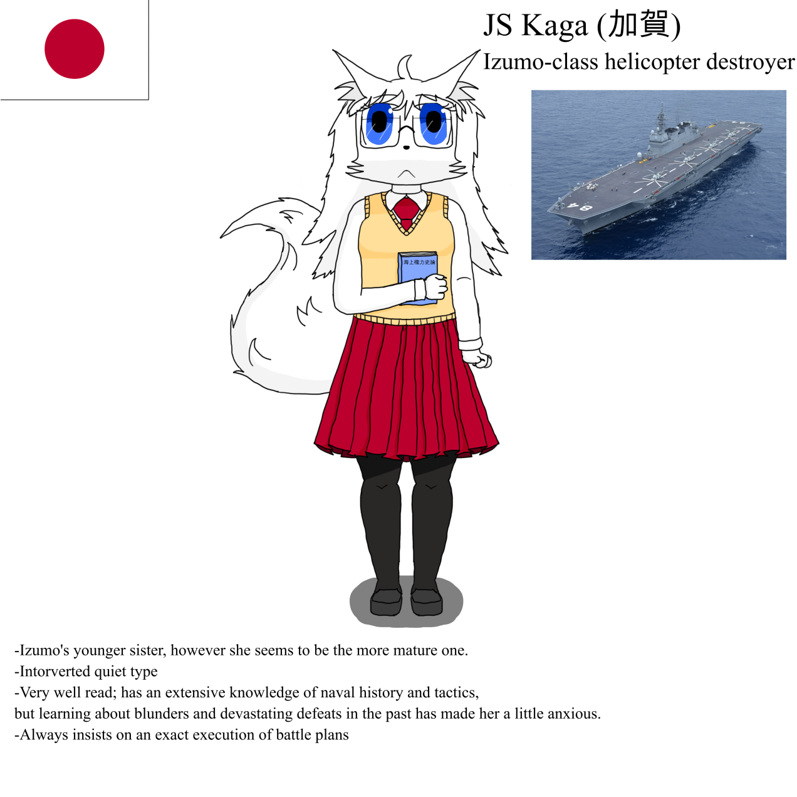

Kaga
Kaga (かが) is an Ajisain shipgirl and a major assisting character in the story of Keen Sword. She has nearly fully white fur and a large fluffy tail similar to her sister Izumo. She also shares very similar eyes with her, ranging from dark blue to a light hue. However, unlike her sister, she does not have another fur color, and her hair is the same white color. The paws are likewise fully white, and her fox ears have a large amount of fluff in them.
She wears a yellow sleeveless sweater with a red tie and a pale shirt underneath. In addition, she also wears a long red pleated skirt that goes down to her knees together with a pantyhose. Finally, she also has a set of square-shaped glasses.
Kaga is introverted and quiet, very well-read but also anxious due to past mistakes, and ultimately the destruction of, her precursor. As a result, she is very insistent on executing battle plans as established prior and does not like improvisation.
| Country | Ajisai |
|---|---|
| Height | 176cm | 5'9" |
| Birthday | 22 March |
| Type | Light Carrier |
In Game
Not Done
Relationships
Izumo
Izumo is Kaga's older sister and believe she should be a leading example to the Ajisaian navy.
Enterprise-san
Before meeting her, Kaga admired Enterprise like her sister did, though she is disappointed to find Big E is actually a slacker.
San Francisco-san
She is teaching San Francisco her language mostly out of annoyance as she constantly mispronounced words.
Trivia
- Her real life counterpart is the Japanese Izumo-Class Helicopter Destroyer JS Kaga (DDH-184)open_in_new.
- Her name was accidentially misspelled in Kanji instead of Hiragana on her reveal image.
Gallery
-

Reveal Image